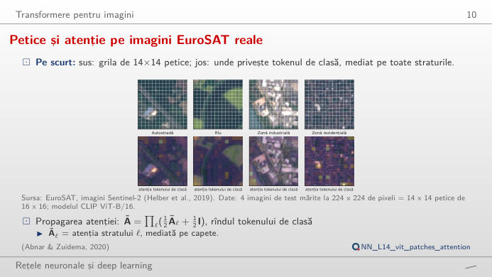
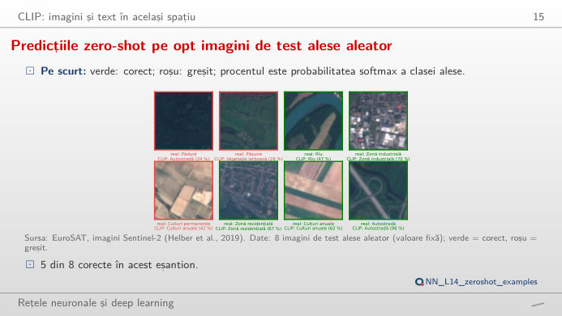
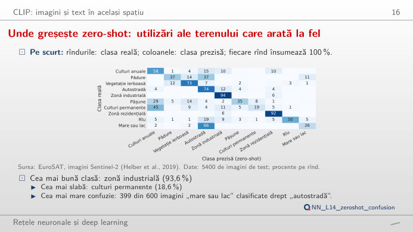
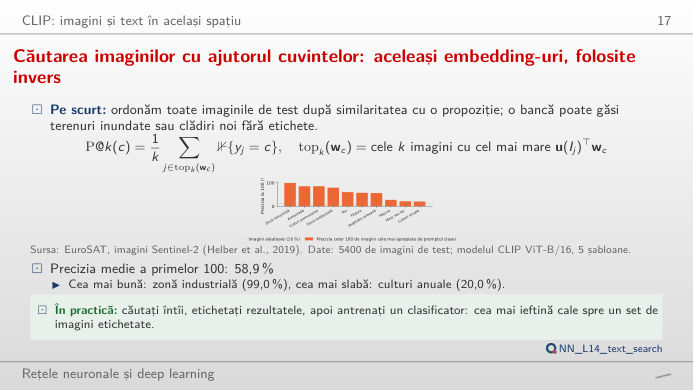
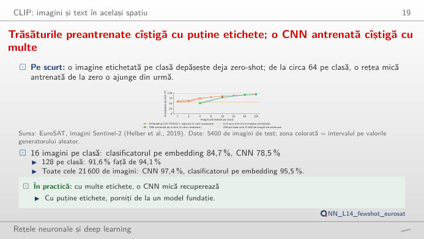
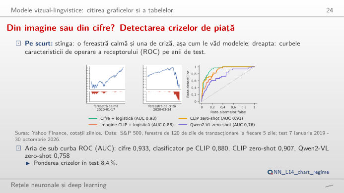

În stînga este slide-ul din curs, în dreapta aceeași figură, recalculată în browser din rezultatele cursului cînd modificați un control. Sub fiecare figură: o sinteză numerică, o întrebare pentru sală și Quantlet-ul cu codul figurii. Modele: CLIP (preantrenare contrastivă limbaj–imagine) ViT-B/32 și ViT-B/16, unde ViT este un transformer pentru imagini; Qwen2-VL-2B, un model vizual-lingvistic (VLM); o rețea neuronală convoluțională (CNN) antrenată de la zero.
Transformere pentru imagini · CLIP: imagini și text în același spațiu · Modele vizual-lingvistice: citirea graficelor
Transformere pentru imagini
Petice și atenție pe imagini EuroSAT reale

Răspuns
14 × 14 = 196 de tokeni-petic plus un token de clasă, în total 197 (cifrele din curs: 12 straturi, 12 capete de atenție, lățimea 768). Cu petice de 8 × 8, grila are 28 × 28 = 784 de tokeni, de patru ori mai mulți, iar autoatenția compară fiecare token cu toți ceilalți, deci costul ei crește de circa 16 ori. Alegeți „media de culoare a fiecărui petic”: cu petice mari, un drum sau un rîu dispare într-un singur token; de aceea detaliile mici cer petice mici. Harta de atenție arată unde se uită tokenul de clasă după toate cele 12 straturi (propagarea atenției, attention rollout).
CLIP: imagini și text în același spațiu
Predicțiile zero-shot pe opt imagini de test alese aleator

Răspuns
Fiecare clasă devine o propoziție („a centered satellite photo of forest.”); imaginea este atribuită clasei a cărei propoziție are embedding-ul cu cea mai mare similaritate cosinus față de embedding-ul imaginii. Cosinusurile sînt apropiate între ele (între circa 0,2 și 0,3), de aceea funcția softmax le înmulțește cu o scală, 100 în CLIP. Scala nu schimbă clasa prezisă, ci doar cît de sigure par probabilitățile: la scala 1, fiecare clasă primește circa 10%, la 200 clasa de pe primul loc ia aproape tot. Pe toate cele 5.400 de imagini de test, cea mai bună variantă, ViT-B/16 cu 5 șabloane, are dreptate în 56,4% din cazuri; 5 din cele 8 imagini de pe slide sînt corecte.
Unde greșește zero-shot: utilizări ale terenului care arată la fel

Răspuns
Cu ViT-B/16 și 5 șabloane, 399 din cele 600 de imagini cu mare sau lac sînt numite autostradă, iar culturile permanente sînt recunoscute doar în 18,6% din cazuri, în timp ce zonele industriale (93,6%) și cele rezidențiale (92,3%) sînt aproape mereu corecte. Promptul contează mult: simplul nume al dosarului dă 34,1% (ViT-B/32) și 42,4% (ViT-B/16), media a 5 șabloane satelitare 49,1% și 56,4%. Cuvintele care descriu imaginea ca fotografie din satelit apropie embedding-ul textului de acest tip de imagine.
Căutarea imaginilor cu ajutorul cuvintelor: aceleași embedding-uri, folosite invers

Răspuns
Nu. Dintre cele 100 de imagini cele mai apropiate de prompt, 99% sînt industriale pentru căutarea zonelor industriale, dar doar 20% sînt culturi anuale pentru căutarea culturilor anuale și 21% pentru mare sau lac; media celor 10 căutări este 58,9%. Modificați k: precizia scade de regulă pe măsură ce sînt returnate mai multe imagini și nu poate rămîne 100% cînd k depășește numărul imaginilor de test din clasă (între 400 și 600, dat în sinteză). Un motor de căutare pe arhiva de imagini satelitare a unei bănci ar trebui verificat clasă cu clasă.
Trăsăturile preantrenate cîștigă cu puține etichete; o CNN antrenată cîștigă cu multe

Răspuns
Cu puține etichete cîștigă reprezentările preantrenate: o imagine pe clasă dă 59,0% cu regresia pe CLIP, deja peste zero-shot (56,4%); cu 4 imagini pe clasă, regresia ajunge la 73,8% și CNN la 50,3%, cu 16 pe clasă la 84,7% față de 78,5%. La 64 pe clasă, CNN o ajunge din urmă (90,9% față de 90,1%), iar la 128 o depășește (94,1% față de 91,6%); pe toate cele 21.600 de imagini de antrenare, CNN atinge 97,4%, regresia 95,5%. Etichetele sînt scumpe: embedding-urile preantrenate sînt începutul ieftin, un model dedicat se justifică atunci cînd etichetele există.
Modele vizual-lingvistice: citirea graficelor
Din imagine sau din cifre? Detectarea crizelor de piață

Răspuns
Cifrele: aria de sub curba ROC (caracteristica de operare a receptorului), AUC, este 0,933 pentru regresia logistică pe cifre, 0,907 pentru CLIP zero-shot, 0,880 pentru regresia pe imaginea CLIP și 0,758 pentru Qwen2-VL zero-shot, pe 394 de ferestre de test, dintre care 8,4% de stres. Modificați ponderea ferestrelor semnalate: cu 10% din ferestre semnalate (39 de alarme), cifrele prind 21 din cele 33 de ferestre de stres, CLIP zero-shot 20, regresia pe imaginea CLIP 14, iar Qwen2-VL 11; pentru a prinde 25 dintre ele, modelul pe cifre are nevoie de 59 de alarme, Qwen2-VL de 191. Cînd cifrele din spatele unui grafic există, dați modelului cifrele; calea imaginii este pentru documentele în care există doar imaginea.
Imagini: EuroSAT, imagini RGB Sentinel-2 ale utilizării terenului în Europa, 64 × 64 de pixeli, 10 clase (Helber et al., 2019); 21.600 de imagini de antrenare și 5.400 de test, împărțire fixată dinainte. Grafice de piață: prețurile zilnice de închidere ale indicelui S&P 500 (Yahoo Finance), ferestre de 120 de zile de tranzacționare la fiecare 5 zile, ferestrele de test din 2019 pînă în octombrie 2026. Modele deschise de pe Hugging Face; toate scorurile au fost calculate în curs (lectures/L14/analysis_L14.py), cu excepția embedding-urilor de text CLIP pentru cele 30 de imagini-exemplu și a propagării atenției pentru cele 10 imagini din primul bloc, recalculate cu aceleași modele pentru această pagină.